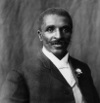

Fıstık ezmesini gerçekten George Washington Carver (1864–1943) mi buldu?
Nesiller boyunca öğrencilere öğle yemeğinde yedikleri fıstık ezmesini eski bir köle olan siyahi Amerikalı bilim insanı George Washington Carver’ın Alabama’daki labaratuvarında bulduğu öğretildi.

Gerçekte ise hayatına dair pek çok ayrıntıda olduğu gibi Carver’ın fıstık ezmesinin keşfindeki rolü de göründüğünden daha karmaşıktır. Ürünün patenti aslında 1895 yılında başka bir bilim insanı olan John H. Kellogg (1852–1943) tarafından alınmıştı.
Ancak Carver’ın fıstık ezmesiyle beraber düzinelerce başka ürünün popüler hale gelmesinde büyük bir katkısı olmuştur. Bilimsel tarımla ilgili yazdığı bültenler çiftçilerin ürünün faydaları hakkında bilgi sahibi olmasını sağlamıştır. Carver’ın ABD’nin güney eyaletlerinde tarımının canlanmasına önemli bir katkısı olmuştur. Zira çiftçileri sadece geleneksel ürünleri olan pamukla yetinmeyerek fıstık ve tatlı patates ekmeye ikna etmiştir.
Carver hem beyazlar hem de siyahiler tarafından Afrika kökenli Amerikalıların başarılarının bir sembolü olarak görülüyordu. Siyahlar için o, eski bir kölenin bile bilimle uğraşabileceğinin bir ispatıydı. Beyazlar için ise onun agresif olmayan yaklaşımı nasıl “iyi bir siyah” olunabileceğinin güzel bir örneğini teşkil ediyordu.
Carver Missouir’de doğmuştu. Ebeveynlerinin iç savaş sırasında ortadan kaybolmasından sonra eski sahipleri tarafından yetiştirilmişti. 1894 yılında İowa Devlet Koleji’nden mezun oldu. Okulun ilk siyahi mezunuydu. 19. yy’da Amerika genelinde kolej bitiren sadece bir avuç Afrika kökenli vardı.
İki yıl sonra Booker T. Washington (1856–1915) tarafından Alabama’daki Washington’s Tuskegee Enstitüsü’nde öğretmenlik yapması için işe alındı. Washington “uzlaşmacı” siyasetin önde gelen temsilcilerinden biriydi. Siyahilerin ekonomik statüsünün yükseltilmesi için çalışırken aynı zamanda Jim Crow’un ayrımcı yasalarını da kabul etmişti. Carver hayatının kalan kısmında enstitünün kurucusunun bu apolitik tavrına sadık kalarak çalışmalarına devam etti.
1920’lerde ABD’nin en ünlü siyahilerinden biri haline gelmişti. Time dergisi ona çok çeşitli ilgileri olduğu için “Siyah Leonardo” lakabını takmıştı (tıpkı Leanorda gibi o da resimle ilgileniyordu). Yetmiş sekiz yaşında Tuskegee’deki evinin merdivenlerinden düşerek öldü.
Ek Bilgiler
1- Carver’ın fıstığın kullanılabileceği 325 farklı alan listelediği söylenmektedir. Bunların arasında fıstık çorbası, fıstıklı bisküvi, fıstıklı kek, fıstıklı çörek, fıstıklı ciğer, fıstıklı kahve ve fıstıklı tıraş kremi de bulunmaktadır.
2- George Washington Carver Ulusal Anıtı, ölümünün ardından kısa bir süre sonra 1943 yılında Missouri’deki memleketi Diamond’da açıldı.
3- Thomas Edison (1847–1931) Carver’a bir iş teklifinde bulunmuş olsa da, o Tuskegee’de kalıp yoksul çiftçilere yardımcı olmayı tercih etmişi.